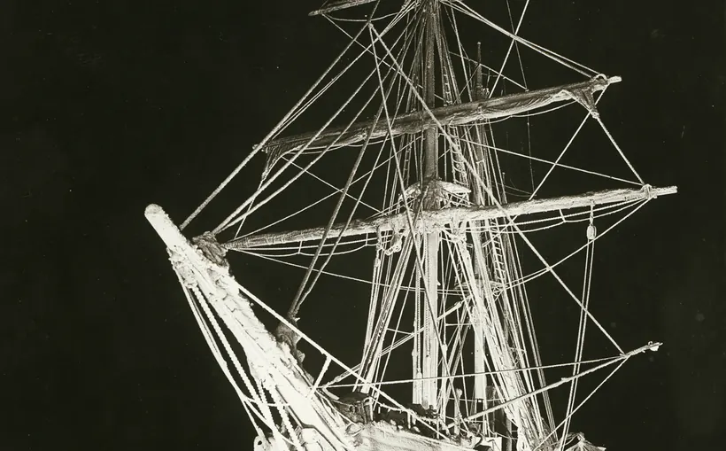

Chapter 10: 緊急應對全集

危機唔係一刻發生，通常係一串小事冇人截停
Shackleton 嘅 Endurance 遠征（1914–1916）最出名係船被南極冰壓毀，但 28 人最後全部生還。公開資料顯示嘅重點係：佢哋及早搬物資、保留救生艇、維持紀律同士氣。呢種「未到最後一秒先諗辦法」正正係 A13 緊急應對想你學嘅：MOB、擱淺、火警、入水，第一步永遠係保人命、穩定現場、再按程序處理。
但緊急應對唔只係大英雄故事。Exxon Valdez 1989 年擱淺，根據 NTSB 報告：第三副操船失誤、疲勞、監督不足等因素共同造成事故。呢個就係 B16 航行職責：watchkeeping 唔係企喺度睇海，而係保持清醒、知道航線、知道風險，必要時叫船長。
Apollo 13 雖然唔係船，但 troubleshooting 原理同 B18 完全相通：先穩住生命支持，隔離故障，逐步測試，唔好亂拆亂試。Costa Concordia 同 Sewol 則提醒 A14/B20：報告、棄船、救生設備、甲板裝備同 crew command 如果混亂，設備再多都救唔切。B19 保養亦唔係抹乾淨咁簡單；保養係令你喺需要嗰刻，泵、電池、纜、救生設備真係用得着。
由故事學知識
→ A13/A14 — MOB、擱淺、火警、事故報告，先保人命，再控制風險，再通報正確機構。
→ A13 · → A14→ B16/B18/B19/B20 — Watchkeeping、故障排除、保養、甲板裝備，全部都係「事故未發生前」嘅緊急應對。
→ B16 · → B18 · → B19 · → B20
Sources
- Research sources: Shackleton Endurance survival; NTSB Exxon Valdez report; NASA/Britannica Apollo 13 troubleshooting; BBC/official references for Costa Concordia and Sewol evacuation/reporting failures.
- Image:
Endurance night 1915 SLNSW.jpg, Frank Hurley / State Library of New South Wales via Wikimedia Commons, Public Domain/no known restrictions.